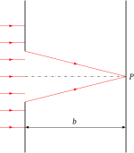
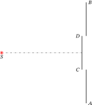
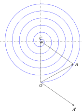
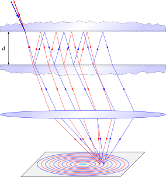
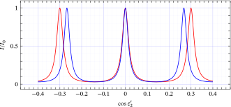
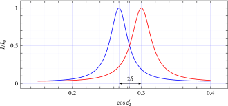
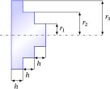
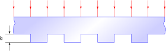
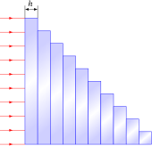

Оптика. Практичний курс
5 Дифракція
§ 5.1 Основні поняття і закони
Дифракція — це будь-яке відхилення при поширенні світла від законів геометричної оптики. Дифракція світла спостерігається при поширенні світлової хвилі в місцях з різкими локальними амплітудними або фазовими неоднорідностями (наприклад, при проходженні через отвори в екранах, поблизу меж непрозорих тіл, через структури з просторово модульованим показником заломлення тощо). Виявом дифракції є дифракційна картина, що є результатом інтерференції хвиль, які дифрагували під різними кутами на границях оптичних неоднорідностей.
Явища дифракції відіграють важливу роль в роботі оптичних інструментів. Через обмеженість розмірів жмутків променів в будь-якому оптичному приладі, зображення, які створюються, мають дифракційне розмиття, що визначає теоретичну роздільну здатність приладу.
Максимально точне розв’язання дифракційних задач є предметом теорії дифракції, яка встановлює взаємозв’язок між розподілом електромагнітного поля у площині предметів і розподілом поля в довільній площині оптичної системи. Однак теорія дифракції виходить за межі даного посібника.
Для розв’язання практичних дифракційних задач використовують наближені методи, які ґрунтуються на принципі Гюйгенса–Френеля, який став розвитком принципу Гюйгенса. Згідно з принципом Гюйгенса кожну точку хвильового фронту можна вважати центром вторинних сферичних хвиль, а положення хвильового фронту в наступний момент часу є визначається як огинаюча поверхня до вторинних хвиль (рис. 5.1).
Згідно з принципом Гюйгенса–Френеля кожна точка довільного хвильового фронту в даний момент часу, є джерелом вторинних когерентних сферичних хвиль, а хвильова поверхня в будь-який момент часу визначається за розподілом поля в результаті їх інтерференції. Математичне обґрунтування принципу Гюйгенса-Френеля було в подальшому дано Кірхгофом, який, зокрема, показав, що в якості поверхні вторинних джерел може бути вибрана не тільки поверхня хвильового фронту, але і будь-яка поверхня, до якої дійшла первинна хвиля. Принцип Гюйгенса-Френеля, який, хоча і є наближеним, дозволяє кількісно описати дифракційні явища, які спостерігаються на простих об’єктах.
Розглянемо монохроматичну світлову хвилю довжиною \(\lambda \), яка поширюється в однорідному середовищі від джерела \(S \) у деяку точку спостереження \(P \) (рис. 5.2). Оточимо джерело сферичною поверхнею радіусом \(a \). Відповідно до принципу Гюйгенса-Френеля, кожна ділянка поверхні хвильового фронту розглядається як центр вторинного джерела. Коливання, що приходить від деякої ділянки \(d\sigma \) в точку \(P \) мають амплітуду:
\(\seteqnumber{0}{5.}{0}\)\begin{equation*} dE_P = K(\alpha ) \frac {A}{r} e^{-i k r} d\sigma , \end{equation*}
де \(A \) — величина, що визначається амплітудою світлової хвилі в місці знаходження елемента \(d\sigma \), \(k \) — хвильове число. Коефіцієнт \(K(\alpha ) \) залежить від кута: між нормаллю до елемента \(d\sigma \) і напрямом від \(d\sigma \) до точки \(P \). Френель припустив, що коефіцієнт \(K(\alpha ) \) монотонно зменшується зі зростанням кута \(\alpha \). Багато практично важливих дифракційних задач можна, розв’язувати не уточнюючи конкретного виду цієї залежності.
Результуюче коливання в точці \(P \) є суперпозицією коливань від усіх елементів \(d\sigma \) поверхні:
\(\seteqnumber{0}{5.}{0}\)\begin{equation} \label {eq:E_p} E_P = \iint \limits _{S}K(\alpha ) \frac {A}{r} e^{-i k r} d\sigma . \end{equation}
Останній вираз є математичним формулюванням принципу Гюйгенса-Френеля. Для визначення коливання в точці \(P \), що лежить перед деякою поверхнею, треба знайти коливання, що надходять у цю точку від усіх елементів \(d\sigma \) поверхні і потім скласти їх з урахуванням амплітуд та фаз.
Однак, у загальному випадку ця задача пов’язана із певними математичними труднощами. Розв’язання цієї задачі спрощується, якщо скористатися так званим методом зон Френеля.
§ 5.2 Метод зон Френеля
Згідно цього методу, фронт хвилі ділиться на кільцеві зони таким чином, щоб відстань від границь цих областей до точки спостереження дорівнювала \(b\), \(b + \frac \lambda 2\), …, \(b + m\frac \lambda 2\), …, відповідно (рис. 5.3). Ці кільцеві області називаються зонами Френеля.
В рамках методу зон Френеля з простих геометричних міркувань можна знайти радіус \(r_{m}\) — радіус \(m\)-ї зони Френеля:
\(\seteqnumber{0}{5.}{1}\)\begin{equation} \label {eq:Zone_Diameter} r_{m}=\sqrt {m\lambda \frac {ab}{a+b}}. \end{equation}
Площі зон (при малих \(m \)) виражаються формулою:
\(\seteqnumber{0}{5.}{2}\)\begin{equation} \label {eq:Zone_Area} S_m = \pi \lambda \frac {ab}{a + b}. \end{equation}
Отже, площі зон Френеля приблизно однакові. Відстань від зони до точки \(P \) повільно зростає з номером зони \(m \). Кут \(\alpha \) в формулі (5.1) також зростає з \(m \). Все це призводить до того, що амплітуда \(E_m \) коливання, що збуджується \(m \)-ю зоною в точці \(P \), монотонно спадає зі зростанням \(m \), тобто, амплітуди коливань, що збуджуються в точці \(P \) зонами Френеля, утворюють монотонно спадну послідовність:
\(\seteqnumber{0}{5.}{3}\)\begin{equation*} |E_1| > |E_2| > |E_3| > \ldots . \end{equation*}
Внаслідок монотонного зменшення \(E_m \) можна приблизно вважати, що
\(\seteqnumber{0}{5.}{3}\)\begin{equation} \label {eq:avE} E_m = \frac {E_{m - 1} + E_{m + 1}}{2} \end{equation}
Оскільки коливання від сусідніх зон проходять до точки \(P \) шляхи, що відрізняються на \(\frac \lambda 2 \), то в точку \(P \) вони приходять із протилежними фазами. Тоді результуюча амплітуда в точці \(P \) дорівнюватиме:
\(\seteqnumber{0}{5.}{4}\)\begin{equation} \label {eq:SumAmpl} E_P = E_1 - E_2 + E_3 - E_4 + E_5 - \ldots , \end{equation}
де \(m \) — номер зони, \(E_m \) — амплітуда \(m \)-ї зони.
Формулу (5.5) можна записати у вигляді:
\(\seteqnumber{0}{5.}{5}\)\begin{equation*} E_P = \frac {E_1}{2} - \left (\frac {E_1}{2} - E_2 + \frac {E_3}{2} \right ) + \left (\frac {E_3}{2} - E_4 + \frac {E_5}{2} \right ) + \left (\frac {E_5}{2} - E_6 + \frac {E_7}{2} \right ) + \ldots . \end{equation*}
При \(m \to \infty \) сума ряду (5.5) зурахуванням (5.4) дає \(E_P \approx \frac {E_1}{2} \), тобто амплітуда \(E_0 \), що створюється в точці \(P \) всією сферичною хвильовою поверхнею, дорівнює половині амплітуди, що створюється однією лише центральною зоною.
Якщо на шляху хвильового фронту поставити перешкоду у вигляді отвору, який відкриває \(N\) зон Френеля, результуюча амплітуда в точці \(P\) буде визначатись як:
\(\seteqnumber{0}{5.}{5}\)\begin{equation} \label {eq:Amplitide_of_holes} E_P =\frac 12\cdot \begin{cases} E_1 - E_N, \quad N = 2m \\ E_1 + E_N, \quad N = 2m+1, \end {cases} \end{equation}
Якщо отвір відкриває парне число зон \(N = 2m\), то в точці \(P\) спостерігатиметься мінімум (темна пляма), а якщо отвір відкриває непарне число зон \(N = 2m + 1\) , то в точці \(P\) спостерігатиметься максимум (світла пляма), а навколо цієї точки чергуватимуться темні та світлі кільця.
Якщо екран з отвором замінити непрозорим диском радіуса \(R\) (дифракція Френеля на круглому диску), амплітуда світлового вектора на екрані в точці \(P\) (в області геометричної тіні) дорівнюватиме:
\(\seteqnumber{0}{5.}{6}\)\begin{equation} \label {eq:Amplitide_of_disk} E_P = \pm \frac 12 E_{m+1}, \end{equation}
де \(m \) — число перших зон Френеля, закритих диском. Таким чином, в точці \(P\) буде завжди спостерігатиметься відмінна від нуля амплітуда. Якщо диск закриватиме невелике число зон Френеля, то в центрі екрану буде добре видно світлу пляму (пляму Пуассона).
Оскільки сумарна амплітуда (5.5) є знакозмінним рядом, то закривши парні, або непарні зони, можна значно підвищити амплітуду в точці \(P\). Для цього треба виготовити екран, який для деяких конкретних значень \(a\) та \(b\) відкривав би тільки парні або непарні зони. Тоді хвилі від відкритих зон надходили б у точку \(Р\) синфазно і інтерференційно підсилювали одну одну. Такий екран називають зонною платівкою Френеля. Переписавши формулу (5.2) в вигляді
\(\seteqnumber{0}{5.}{7}\)\begin{equation} \label {eq:Focuse} \frac 1b+\frac 1a=\frac {m\lambda }{r_{m}^{2}} \end{equation}
отримаємо формулу для радіусів кілець зонної платівки Френеля. Порівнявши (5.8) з формулою Гауса (1.25a) \(\frac 1b + \frac 1a = \frac 1f\), можна зробити висновок, що зонна платівка працює як лінза з фокусною відстанню
\(\seteqnumber{0}{5.}{8}\)\begin{equation} f=\frac {r^{2}_{m}}{m\lambda }. \end{equation}
Зонна платівка Френеля, крім основного, має додаткові фокуси меншої інтенсивності, які утворюються для певних взаємних положень джерела і точки спостереження, при яких в кожне кільце потрапляють непарні кількості зон Френеля, тобто:
\(\seteqnumber{0}{5.}{9}\)\begin{equation*} f_\text {дод} = \frac {f}{p}, \quad p = 3, 5, 7,\ldots . \end{equation*}
Метод векторних діаграм
Результат, представлений формулою (5.5), можна отримати за допомогою методу векторних діаграм. Використання цього методу надалі дозволить значно спростити багато міркувань та розрахунків.
Суть метода полягає в зображенні хвилі у вигляді вектора \(\Delta \vect {E} \), довжина якого відповідає амплітуді хвилі, а кут одного вектора відносно іншого визначає відносну різницю їхніх фаз. Нехай амплітуда хвилі, яка розповсюджується до точки спостереження від першої зони Френеля, дорівнює \(E_{1} \). Якщо тепер розбити першу зону Френеля на \(p \) рівних підзон, то зсув фаз між коливаннями від сусідніх підзон становитиме \(\pi /p \). Тому на векторній діаграмі відповідні вектори коливань від сусідніх підзон будуть повернуті, кожен відносно попереднього, на кут \(\pi /p \) (рис. 5.4а). З геометричних міркувань очевидно, що вектори цих підзон є хордами, які стягують на півколі з діаметром \(E_{1} \) відповідний кут, а їх сума дасть вектор першої зони Френеля.
Аналогічно обходяться і з наступними зонами Френеля. Зауважимо, що саме вихідна умова надходження у протифазі коливань хвиль від сусідніх зон Френеля зумовлює зображення їх протилежно напрямленими векторами з монотонно спадаючими амплітудами, сума яких дає вектор \(E_0 \).
При наближені ширини кільцевих підзон до нуля (кількість їх буде при цьому необмежено зростати) векторна діаграма набуде вигляду спіралі, що закручується до точки \(C \) (рис. 5.4б). Довжина результуючого вектора \(\vec {AC} = E_0 \) є амплітудою коливань, що збуджуються в точці \(P \) у випадку, якщо на шляху світла нема перешкод — так звана «амплітуда вільного простору».
Деякі приклади визначення амплітуди результуючої хвилі показані на рис 5.5.
Дифракційний критерій
Для того, щоб визначити характер дифракції користуються критерієм. Оскільки, вигляд дифракційної картини залежить від того скільки відкрито (або закрито) зон Френеля, то для визначення умов дифракції зручно ввести параметр:
\(\seteqnumber{0}{5.}{9}\)\begin{equation} \label {eq:m_number_of_zones} m = \frac {R^2}{\lambda b}, \end{equation}
де \(R\) — характерні розміри перешкоди, \(b \) — відстань до області спостереження. За умови \(\frac {R^2}{\lambda b} \gg 1\) дифракційні ефекти незначні, і розподіл інтенсивності можна описати на основі геометричної оптики. Для \(\frac {R^2}{\lambda b}\approx 1\), отвір або екран перекривають декілька зон Френеля, і має місце дифракція Френеля. Для \(\frac {R^2}{\lambda b}\ll 1\) відкрита лише незначна частина першої зони Френеля — можна вважати хвильовий фронт плоским, тобто має місце дифракція в паралельних променях, або дифракція Фраунгофера.
§ 5.3 Дифракція Фраунгофера на щілині
Нехай на нескінченно довгу щілину шириною \(b \) падає плоска монохроматична світлова хвиля, довжиною \(\lambda \) (рис. 5.6а).
Розіб’ємо відкриту частину хвильової поверхні на \(N \) вузьких зон однакової ширини. Коливання, що збуджуються кожною такою зоною, має однакову амплітуду \(\Delta \vect {E} \) і відстає по фазі від попереднього коливання на ту саму величину \(\frac {\delta }{N} \), що залежить від кута дифракції \(\phi \), який визначає напрямок на точку спостереження \(P \).
Як видно з рис. 5.6а, повна різниця фаз між крайніми променями, а отже, і між початковим та кінцевим векторами дорівнює \(\delta = \frac {2\pi \Delta }{\lambda } \), де \(\Delta = b\sin \phi \) — різниця ходу між крайніми променями. Векторна діаграма має вигляд, зображений на рис 5.6б.
Нехай довжина ланцюжка векторів \(\Delta \vect {E} \) дорівнює \(E_0 \), а результуючий вектор \(\vect {E} \). Тоді, як видно з рис. 5.6б, \(E_0 = R\delta \), \(E = 2R\sin \frac \delta 2 \). Виключаючи з цих рівнянь \(R \), отримаємо:
\(\seteqnumber{0}{5.}{10}\)\begin{equation} \label {eq:Difraction_E_slot} E = E_0 \frac {\sin \delta /2}{\delta /2}. \end{equation}
Інтенсивність світла в точках на екрані випливає з (5.11):
\(\seteqnumber{0}{5.}{11}\)\begin{equation} \label {eq:Difraction_I_slot} I = I_0 \frac {\sin ^2\left ( {\frac {\pi b}{\lambda } \sin \phi }\right )}{\left ( \frac {\pi b}{\lambda } \sin \phi \right )^2}, \end{equation}
де \(I_0\) — інтенсивність падаючої хвилі, \(b\) — ширина щілини, \(\lambda \) — довжина хвилі, \(\phi \) — кут дифракції.
Дифракційну картину Фраунгофера на щілині можна спостерігати на екрані у фокальній площині лінзи, направивши на отвір нормально плоску світлову хвилю. (рис. 5.7)
Кутове положення мінімумів інтенсивності визначається з (5.12):
\(\seteqnumber{0}{5.}{12}\)\begin{equation} \label {eq:Difraction_Slot_min} b\sin \phi =\pm m\lambda , \end{equation}
число мінімумів \(m = 1, 2, \ldots , \left [ \frac {b}{\lambda }\right ]\).
Для інтенсивностей в максимумах з (5.12) можна отримати співвідношення:
\(\seteqnumber{0}{5.}{13}\)\begin{equation} I_0:I_1:I_2:\ldots = 1:\left (\frac {2}{3\pi }\right )^2:\left (\frac {2}{5\pi }\right )^2:\ldots = 1:0,045:0,016:\ldots . \end{equation}
Таким чином, центральний максимум значно перевищує за інтенсивністю решту максимумів; у ньому зосереджується основна частка світлового потоку, що проходить крізь щілину.
§ 5.4 Дифракція Фраунгофера на круглому отворі
Дифракція Фраунгофера на круглому отворі має велике практичне значення, так як в оптичних приладах оправи лінз і діафрагми мають круглу форму. Дифракційну картину Фраунгофера від круглого отвору можна спостерігати на екрані, який знаходиться у фокальній площині лінзи, поставленої за отвором, направивши на отвір плоску світлову хвилю.
Дифракційна картина в фокальній площині має вигляд концентричних світлих і темних кілець з наступним розподілом інтенсивності:
\(\seteqnumber{0}{5.}{14}\)\begin{equation} \label {eq:Hole_I_Difraction} I = I_0 \left ( \frac {2J_1(kr\sin \phi )}{kr\sin \phi }\right )^2, \end{equation}
де \(J_1(x) \) — функція Бесселя, \(k \) — хвильове число, \(\phi \) — кут дифракції, \(r \) — радіальна координата точки екрану.
Графік функції (5.15) зображено на рис. 5.8
|
Мінімуми |
Максимуми |
Відносна інтенсивність в максимумах |
|
\(0,61\frac \lambda R \) |
\(0 \) |
\(1 \) |
|
\(1,12\frac \lambda R \) |
\(0,81\frac \lambda R \) |
\(0,0175 \) |
|
\(1,62\frac \lambda R \) |
\(1,33\frac \lambda R \) |
\(0,0042 \) |
|
\(2,12\frac \lambda R \) |
\(1,85\frac \lambda R \) |
\(0,0016 \) |
Інтенсивність головного максимуму становить 84% світлового потоку, який проходить через отвір. Центральний максимум, який носить назву «диск Ейрі» і має кутовий радіус \(0.61\frac {\lambda }{R}\), де \(R \) — радіус отвору, можна розглядати як дифракційне зображення точки.
Роздільна здатність оптичних приладів
За рахунок дифракції будь-яка, навіть вільна від геометричних аберацій, оптична система є дифракційно обмеженою, тобто її роздільна здатність визначається дифракційним розпливанням зображення точки.
Так як кожен предмет складається з набору точок, то роздільну здатність визначають, як можливість оптичної системи створювати зображення цих точок так, щоб їх можна було відокремити одне від другого. Кількісний критерій оцінки того, наскільки дифракційні зображення (диски Ейрі) двох точок розділяються, є досить умовним. Прийнято користуватись критерієм Релея, згідно з яким зображення двох точкових джерел спостерігаються роздільно, якщо положення максимуму дифракційного зображення одного джерела співпадає з першим мінімумом зображення другого джерела. Це означає, що відстань між центрами зображення двох точкових джерел дорівнює радіусу кружка Ейрі (рис. 5.9). Критерій Релея використовують також і для визначення спектральної роздільної здатності спектральних приладів.
Основні формули
Кутова ширина диска Ейрі (за умови \(D \gg \lambda \)):
\(\seteqnumber{0}{5.}{15}\)\begin{equation} \label {eq:delta_phi_0} \delta \phi _0 = 1,22\frac {\lambda }{D}, \end{equation}
де \(D\) — діаметр отвору.
Діаметр кружка Ейрі в фокальній площині об’єктива:
\(\seteqnumber{0}{5.}{16}\)\begin{equation} \label {eq:Eiri_diameter} d_E = 2,44\frac {\lambda }{D}f'. \end{equation}
Гранична кутова роздільна здатність дифракційно обмеженого об’єктива:
\(\seteqnumber{0}{5.}{17}\)\begin{equation} \label {eq:psi_b} \psi _\text {гр} = 1,22\frac {\lambda }{D}, \end{equation}
де \(D\) — діаметр отвору оправи, або вхідна зіниця об’єктива.
Лінійна роздільна здатність мікроскопа визначається мінімальним розміром об’єкта спостереження в предметній площині об’єктива як
\(\seteqnumber{0}{5.}{18}\)\begin{equation} \label {eq:l_min} \ell _{\min } \approx 0,61 \frac {\lambda }{n\sin u}, \end{equation}
для предметів з підсвічуванням:
\(\seteqnumber{0}{5.}{19}\)\begin{equation} \label {eq:l_min_immers} \ell _{\min } \approx 0,5 \frac {\lambda }{n\sin u}, \end{equation}
де \(n\sin u\) — числова апертура, \(u \) — апертурний кут об’єктива в просторі предметів, або передній апертурний кут, \(n \) — показник заломлення імерсійного середовища.
§ 5.5 Дифракційна ґратка
В загальному випадку дифракційною ґраткою називається оптичний елемент, пропускання і/або відбивання якого змінюються за періодичним законом. В залежності від характеру зміни оптичних характеристик, ґратки діляться на амплітудні, фазові або амплітудно/фазові. Крім того, ґратки можуть працювати на пропускання або відбивання падаючого випромінювання. Найпростіша амплітудна ґратка — це набір періодичних прозорих щілин в непрозорому екрані.
Нехай, маємо дифракційну ґратку, яка має щілини шириною \(b\), розділені між собою непрозорими проміжками довжиною \(a\) (рис. 5.10). Періодом дифракційної ґратки називається величина
\(\seteqnumber{0}{5.}{20}\)\begin{equation*} d = a + b. \end{equation*}
Джерело монохроматичного світла знаходиться в нескінченності, тому хвиля, що падає на дифракційні ґратку, плоска. Лінза, поміщена за ґраткою, збирає промені на екрані, розташованому в фокальній площині.
Інтенсивність світла в точках на екрані визначається формулою:
\(\seteqnumber{0}{5.}{20}\)\begin{equation} \label {eq:Difraction_I_slots} I = I_0 \frac {\sin ^2\left ( {\frac {\pi b}{\lambda } \sin \phi }\right )}{\left ( \frac {\pi b}{\lambda } \sin \phi \right )^2} \cdot \frac {\sin ^2\left ( {N\ \frac {\pi d}{\lambda } \sin \phi }\right )}{\sin ^2\left ( \frac {\pi d}{\lambda } \sin \phi \right )}, \end{equation}
де \(N\) — кількість штрихів, \(\phi \) — кут дифракції.
Дифракційна картина від ґратки є результат дифракції хвиль від кожної щілини і інтерференції хвиль від різних щілин.
Напрямки, в яких коливання від сусідніх щілин підсилюють один одного, називаються головними максимумами та визначаються умовою:
\(\seteqnumber{0}{5.}{21}\)\begin{equation} \label {eq:Difraction_main_max} d\sin \phi =\pm m\lambda , \quad m = 0, 1, 2, \ldots , \left [\frac {d}{\lambda }\right ] \end{equation}
де \(m\) — порядок головного максимуму, \(\left [\frac {d}{\lambda }\right ]\) — найбільший порядок головного максимуму.
Додаткові мінімуми розташовані між головними максимумами та розділені між собою додатковими максимумами:
\(\seteqnumber{0}{5.}{22}\)\begin{equation} \label {eq:Difraction_add_min} d\sin \phi =\pm \left (m + \frac {k}{N}\right ) \lambda , \quad k = 1, 2, \ldots , N - 1. \end{equation}
де \(k\) — порядковий номер додаткового мінімуму.
На інтерференційну картину також впливає розподіл інтенсивності від дифракції на щілині, головні мінімуми спостерігаються в напрямках, що визначаються умовою:
\(\seteqnumber{0}{5.}{23}\)\begin{equation} \label {eq:Difraction_main_min} b\sin \phi = \pm m'\lambda , \quad m' = 0, 1, 2, \ldots , \left [ \frac {b}{\lambda }\right ]. \end{equation}
При падінні випромінювання під кутом \(\psi \) формула (5.22) ґратки набуває вигляду:
\(\seteqnumber{0}{5.}{24}\)\begin{equation} d(\sin \phi - \sin \psi ) = \pm m \lambda . \end{equation}
При цьому максимально можливий порядок дифракції збільшується удвічі.
Спектральні характеристики дифракційної ґратки.
Як випливає з формули (5.22), положення головних максимумів (крім нульового) залежить від довжини хвилі \(\lambda \). Тому ґратка здатна розкладати випромінювання в спектр, тобто є спектральним приладом. Якщо на ґратку падає немонохроматичне випромінювання, то кожному порядку дифракції (тобто при кожному значенні \(m\)) виникає спектр досліджуваного випромінювання, причому фіолетова частина спектру розташовується ближче до максимуму нульового порядку. Максимум нульового порядку залишається незабарвленим (рис. 5.11).
Формули для спектральних характеристик дифракційної ґратки
Кутова дисперсія ґратки:
\(\seteqnumber{0}{5.}{25}\)\begin{equation} \label {eq:Difraction_angular_dispersion} D = \frac {\delta \phi }{\delta \lambda } = \frac {m}{d\cos \theta } = \frac {m}{\sqrt {d^2 - (m\lambda )^2}}. \end{equation}
Лінійна дисперсія
\(\seteqnumber{0}{5.}{26}\)\begin{equation} \label {eq:Difraction_linear_dispersion} D_l = \frac {f'\delta \phi }{\delta \lambda } = \frac {f'm}{d\cos \theta } = \frac {f'm}{\sqrt {d^2 - (m\lambda )^2}}, \end{equation}
де \(f'\) — задня фокусна відстань об’єктива приладу.
Роздільна здатність ґратки:
\(\seteqnumber{0}{5.}{27}\)\begin{equation} \label {eq:Difraction_Slots_resolution} R = \frac {\lambda }{\delta \lambda } = mN. \end{equation}
Інтервал довжин хвиль \(\Delta \lambda \), в межах якого ще не перекриваються спектри сусідніх порядків, називається областю вільної дисперсії, яка визначається за формулою:
\(\seteqnumber{0}{5.}{28}\)\begin{equation} \label {eq:Difraction_free_dispersion} \Delta \lambda = \frac {\lambda }{m}. \end{equation}
Дифракція рентгенівських променів на кристалічній ґратці.
Дифракція рентгенівських променів на кристалічній ґратці використовується в рентгенівській спектроскопії і рентгеноструктурному аналізі. Умовою інтерференційного підсилення променів, відбитих від паралельних атомних площин (рис. 5.12), є умова Брега-Вульфа:
\(\seteqnumber{0}{5.}{29}\)\begin{equation} \label {eq:Brag-Wolf} 2d\sin \alpha = \pm m\lambda \end{equation}
де \(d\) — відстань між атомними площинами, \(\alpha \) — кут ковзання світла.
Дифракція рентгенівських променів від кристалів використовується для дослідження спектрального складу рентгенівського випромінювання (рентгенівська спектроскопія) та для вивчення структури кристалів (рентгеноструктурний аналіз).
Визначаючи напрямки максимумів, що утворюються при дифракції досліджуваного рентгенівського випромінювання від кристалів з відомою структурою можна обчислити довжини хвиль. Спочатку для визначення довжин хвиль були використані кристали кубічної системи, причому міжплощинні відстані визначалися за густиною та відносною молекулярною масою кристала.
§ 5.6 Приклади розв’язування задач
Приклад 28. На діафрагму із круглим отвором діаметром \(6 \) мм нормально падає плоска монохроматична хвиля (\(600 \) нм). За діафрагмою на відстані \(3 \) м від неї знаходиться екран спостереження. а) Скільки зон Френеля вкладаються в отворі діафрагми? б) Яким буде центр дифракційної картини на екрані: темним або світлим? в) Інтенсивність світла в центрі картини в порівнянні з інтенсивністю при відсутності екрана. г) При якому радіусі отвору діафрагми в центрі картини буде найбільш темна пляма? д) Яким буде центр тіні на екрані, якщо діафрагму з отвором замінити непрозорим диском того ж діаметра? е) На які відстані потрібно відсунути екран спостереження від диска, щоб інтенсивність світла в плямі Пуассона була не менше, ніж у попередньому пункті.

Розв’язок.
а) Число зон Френеля, що укладаються в отворі діафрагми, визначаємо по формулі (5.10) при \(a \to \infty \):
\(\seteqnumber{0}{5.}{30}\)\begin{equation} \label {eq_in_prb:m} m = \frac {R^2}{b\lambda }. \end{equation}
б) Амплітуду поля в точці \(P\) при \(m = 5\) знаходимо за формулою (5.6):
\(\seteqnumber{0}{5.}{31}\)\begin{equation*} E(P) = E_1 + E_5. \end{equation*}
Оскільки вона не дорівнює нулю, у точці \(P \) буде світла пляма.
в) За відсутності діафрагми амплітуда світлового вектора в точці \(P \) дорівнює \(\frac 12 E_1 \), а відповідна їй інтенсивність дорівнює \(I_0 \). Оскільки \(m = 5 \) невелике, \(E_5 \) буде незначно менше \(E_1 \) і можна прийняти \(E(P) = E_1 + E_5 \approx 2 E_1 \). Таким чином, за рахунок дифракції на отворі діафрагми амплітуда \(E(P) \) зросла майже вдвічі. Отже, інтенсивність повинна зрости в \(4 \) рази (\(I_p = 4I_0\)).
г) Відповідно до формули (5.6) у точці \(P \) буде темно при парному числі зон, що відкриті отвором діафрагми, а найбільш темно при найменшому їхньому числі (\(m = 2 \)).
Радіус отвору діафрагми визначаємо з формули (5.31):
\(\seteqnumber{0}{5.}{31}\)\begin{equation*} R = \sqrt {mb\lambda } = 1,89\ \text {мм}. \end{equation*}
д) Амплітуда світлового вектора в центрі дифракційної картини за непрозорим диском при \(m = 5 \) закритих їм зон Френеля визначається по формулі (5.7). Оскільки \(E_6 \) за абсолютним значенням не набагато менше \(E_1 \), у точці \(P \) буде світла пляма (пляма Пуассона) з інтенсивністю, трохи меншою за \(I_0 \).
е) Оскільки амплітуди \(E_6 \) повільно спадають зі зростанням \(m \), інтенсивність світла в плямі Пуассона не менше, ніж у попередньому випадку, і буде спостерігатися при цілих \(m < 5 \), тобто при \(m = 1, 2, 3, 4 \). Відповідні ним значення відстані \(b \) від диска до екрана визначаємо з формули:
\(\seteqnumber{0}{5.}{31}\)\begin{equation*} b_m = \frac {R^2}{m\lambda }. \end{equation*}
Обчислення дають: \(b_4 = 3,75 \) м; \(b_3 = 5 \) м; \(b_2 = 7,5 \) м; \(b_1 = 15 \) м. Таким чином, найбільш світло в плямі Пуассона буде при \(m = 1 \) і \(b = 15 \) м, коли \(E(P) = 0,5E_1 \).
Приклад 29. На відстані від точкового джерела \(S \) електромагнітної хвилі нескінчений ідеально відбиваючий екран АВ (рис.). Використовуючи векторну діаграму, знайти як зміниться інтенсивність відбитої хвилі у точці \(S \), якщо з екрана вирізати диск \(CD \) з центром в основі перпендикуляра, опущеного з \(S \) на площину екрана, та змістити цей диск у напрямі до джерела на одну дванадцяту довжини хвилі? Площа диска складає одну третину від площі першої зони Френеля. Як зміниться результат, якщо зміщення виконати у зворотному напрямі на ту ж величину?

Розв’язок.
Коливання від усіх зон Френеля зображуються вектором \(OC \) (див. рис.).
Коливання від третини першої зони — вектором \(OA \). Вектор \(AC \) відповідає коливанню, що викликане хвилями, які відбились від зовнішньої частини екрану, розташованої за отвором \(CD \).

Ці три вектори утворюють рівносторонній трикутник, якщо знехтувати зменшенням радіуса витка спіралі на одному обороті. При зміщенні центрального диска до джерела на \(\frac {\lambda }{12} \) фаза відбитої ним хвилі збільшиться на \(2\frac {2\pi }{12} = \frac {\pi }{3} \), і коливання зобразиться вектором, який рівний та протилежно напрямлений вектору \(AC \). Інтенсивність всієї відбитої хвилі у точці \(S \) дорівнюватиме нулю. При зміщенні диска \(CD \) у протилежний бік фаза коливання \(OA \) зменшиться на \(\frac {\pi }{3} \) і вектор \(OA \) повернеться у положення \(OC \).
Результуюче коливання знайдеться додаванням векторів \(AC \) та \(OC \). Таким чином знайдемо, що амплітуда коливань у точці \(S \) збільшиться у \(\sqrt {3}\) рази, а інтенсивність – втричі.
Приклад 30. Плоска монохроматична хвиля (\(0,569 \) мкм) нормально падає на екран із щілиною шириною \(2 \) мкм. а) Скільки спостерігається додаткових максимумів у дифракційній картині? б) Яка кутова ширина зображення джерела світла? в) Яка лінійна ширина цього зображення на екрані, якщо воно створене лінзою з фокусною відстанню \(1 \) м?
Розв’язок.
Див. рис. 5.7. а) Число додаткових максимумів \(k\) повинне бити на одиницю менше числа мінімумів.
Максимальне мінімумів з (5.13) дорівнює цілій частині від \(\left [ \frac {b}{\lambda }\right ] \), а тому, число додаткових максимумів:
\(\seteqnumber{0}{5.}{31}\)\begin{equation*} k = \left [ \frac {b}{\lambda }\right ] - 1 = \left [ \frac {2}{0,569}\right ] - 1 = 2. \end{equation*}
Тобто, видимими є три перших мінімуми й два додаткових максимуми з обох сторін від головного.
б) Кутова ширина дифракційного зображення джерела дорівнює кутовій ширині головного максимуму:
\(\seteqnumber{0}{5.}{31}\)\begin{equation*} \delta \phi _0 = 2\phi _1 = 2\arcsin \left ( \frac {\lambda }{b} \right ) = 34^\circ 15'19''. \end{equation*}
в) Лінійна ширина дифракційного зображення — це відстань між \(m= +1\) та \(m = -1\) мінімумами, тобто
\(\seteqnumber{0}{5.}{31}\)\begin{equation*} \Delta x = 2f'\tg \phi _1 = 2f'\frac {\lambda }{b} = 61,6\ \text {см}. \end{equation*}
Приклад 31. Дифракційна ґратка освітлюється нормально падаючим паралельним пучком світла (\(500 \) нм). Відстань між першими головними максимумами, спроектованими лінзою (\(f' = 1 \) см) на екран, дорівнює \(20,2 \) см. База ґратки \(B = 10 \) см. Визначити: а) період ґратки; б) число штрихів на \(1 \) мм; в) кутову й лінійну ширину головного максимуму; г) кутову й лінійну дисперсії ґратки в спектрі першого порядку; д) роздільну здатність ґратки в спектрі першого порядку.
Розв’язок.
Див. рис. 5.10.
а) З умови головних максимумів дифракційної ґратки (5.22) при \(m = 1 \)
\(\seteqnumber{0}{5.}{31}\)\begin{equation*} d = \frac {\lambda }{\phi _1}. \end{equation*}
З рис. \(\sin \phi _1 \approx \tg \phi _1 = \frac {\Delta x_1}{f'}\), звідки \(2\lambda \frac {f'}{\Delta x_1} = 4,95\) мкм.
Кут дифракції, під яким видно перший головний максимум \(\phi _1 = \arcsin \left ( \frac {\lambda }{d}\right ) = 5,798^\circ \), малий, тому умова \(\sin \phi _1 \approx \tg \phi _1\) задовольняється.
б) Число штрихів на \(1 \) мм ґратки
\(\seteqnumber{0}{5.}{31}\)\begin{equation*} \frac 1{d} = 202\ \text {мм\textsuperscript {-1}}. \end{equation*}
в) Кутова ширина головного максимуму (для якого \(m = 0\)) — це кут між напрямками на найближчі до нього мінімуми (для яких \(k = \pm 1\)) \(\delta \phi _0 = 2*\phi _{\min }\). Положення мінімумів знаходимо з формули (5.23). Отже:
\(\seteqnumber{0}{5.}{31}\)\begin{equation*} \sin \phi _{\min } = \left ( \frac {\left (0 + \frac {1}{N} \lambda \right )}{d} \right ) . \end{equation*}
Оскільки кутова ширина мала \(\sin \phi _{\min } \approx \phi _{\min }\), одержуємо:
\(\seteqnumber{0}{5.}{31}\)\begin{equation*} \delta \phi _0 =2\phi _{\min } = \approx \frac {2\lambda }{Nd} = \frac {2\lambda }{B} = 2,06'', \end{equation*}
де \(B = Nd\) — база ґратки.
Лінійна ширина головного максимуму на екрані \(d\ell = f'\delta \phi _0 = 0,01 \) мм.
г) Кутову дисперсію (див. рис. 5.11) визначаємо за формулою (5.26) при \(m = 1\):
\(\seteqnumber{0}{5.}{31}\)\begin{equation*} D = \frac {\delta \phi }{\delta \lambda } = \frac {m}{\sqrt {d^2 - (m\lambda )^2}} = 0,2\ \text {рад/мкм}. \end{equation*}
Лінійна дисперсія
\(\seteqnumber{0}{5.}{31}\)\begin{equation*} D_{\lambda } = f D = 0,2\ \text {см/мкм}. \end{equation*}
в) Роздільну здатність визначаємо за формулою (5.28):
\(\seteqnumber{0}{5.}{31}\)\begin{equation*} R = m N = m \frac {B}{d} = 2,02\cdot 10^5. \end{equation*}
Границя спектрального розділення ґратки:
\(\seteqnumber{0}{5.}{31}\)\begin{equation*} \delta \lambda = \frac {\lambda }{R} = 0,247\cdot 10^5\ \text {мкм}. \end{equation*}
Приклад 32. Знайти роздільну здатність інтерферометра Фабрі-Перо.
Вказівка: Для розділення двох спектральних ліній \(\lambda \) та \(\lambda + \delta \lambda \) необхідно, щоб в інтерференційній картині, яку дає інтерферометр, ці лінії були розведені на відстань не меншу півширини лінії.
Розв’язок.
Побудуємо хід променів для двох монохроматичних хвиль з довжинами \(\lambda \) та \(\lambda + \delta \lambda \), які падають на інтерферометр під різними кутами.

Умова максимуму при багатопроменевій інтерференції для променів, що пройшли крізь плоско-паралельний прошарок в інтерферометрі Фабрі-Перо визначається з формули (4.18):
\(\seteqnumber{0}{5.}{31}\)\begin{equation} 2d\cos \epsilon '_2 = m\lambda , \end{equation}
де \(\Delta \) — різниця ходу, \(d\) — товщина повітряного прошарку між посрібненими поверхнями, \(\epsilon '_2\) — кут падіння на нижню посріблену поверхню (див. рис.).
Побудуємо розподіл інтенсивності на екрані для двох \(\lambda \) та \(\lambda + \delta \lambda \) за формулою (4.17):
\(\seteqnumber{0}{5.}{32}\)\begin{equation*} \frac {I_T}{I_0} = \frac {(1-R)^2}{(1-R)^2 + 4R\sin ^2\left ( \frac {\pi }{\lambda } d\cos \epsilon '_2 \right ) }, \end{equation*}
де \(I_0\) — інтенсивність падаючого світла, \(I_T\) — інтенсивність світла, що пройшло крізь інтерферометр.

Розглянемо детально максимум \(m\)-го порядку для двох довжин хвиль, для яких виконується умова вказівки, тобто дві сусідні лінії розведені на відстань півширини лінії, яку позначимо \(2\delta \), де \(\delta \) — це зсув фаз, при якому інтенсивність хвилі зменшується вдвічі (див. (4.21)).

В цьому випадку:
\(\seteqnumber{0}{5.}{32}\)\begin{equation*} \cos \phi = \frac {m\lambda }{d} + \delta = \frac {m(\lambda + \delta \lambda )}{d} - \delta , \end{equation*}
з (4.21)
\(\seteqnumber{0}{5.}{32}\)\begin{equation*} \delta \approx \frac {\pi \sqrt {R}}{1-R}\frac {\lambda }{2d}. \end{equation*}
Звідки роздільна здатність:
\(\seteqnumber{0}{5.}{32}\)\begin{equation*} R = \frac {\lambda }{\delta \lambda } = \frac {m \pi \sqrt {R}}{(1-R) }. \end{equation*}
Цей вираз можна записати у тому ж вигляді, що і для дифракційної ґратки,. для дифракційної ґратки \(R = mN\), а тому роль ефективного числа штрихів грає величина:
\(\seteqnumber{0}{5.}{32}\)\begin{equation*} N_\text {еф} = \frac { \pi \sqrt {R}}{(1-R) }. \end{equation*}
§ 5.7 Задачі для самостійного розв’язку
Дифракція Френеля
-
5.7. Дифракційна картина спостерігається на відстані 4 м від точкового джерела (\(\lambda = 5\cdot 10^{-7}\) м). Посередині між джерелом і екраном встановлена діафрагма із круглим отвором. При якому радіусі отвору центр світлого кола на екрані буде: а) найбільш темним; б) найбільш світлим? [відповідь]
-
5.8. Плоска монохроматична хвиля (\(0,5\) мкм) з інтенсивністю \(I_0\) нормально падає на діафрагму із круглим отвором діаметра \(2\) мм. а) Знайти відстань \(b_1\), \(b_2\), \(b_3\), …від діафрагми до точок \(P1\), \(P_2\), \(P_3\), …на осі твору, для яких в отворі укладається \(1\), \(2\), \(3\), …зон Френеля. б) Побудувати приблизно графік залежності \(I_p(b)\). [відповідь]
-
5.9. Паралельний монохроматичний пучок світла (\(0,6\) мкм) падає нормально на діафрагму із круглим отвором діаметра \(1,2\) м. На відстані \(15\) см за діафрагмою на осі отвору спостерігається темна пляма. На яку мінімальну відстань \(\Delta b\) необхідно зміститися від цієї точки уздовж осі отвору, віддаляючись від нього, щоб у центрі дифракційної картини знову спостерігалася темна пляма? [відповідь]
-
5.10. На шляху плоскої монохроматичної хвилі встановлюється непрозора ширма із секторним вирізом. Дифракційна картина, що створюється нею спостерігається на екрані, розташованому за ширмою на деякій відстані у точці \(P\). Інтенсивність світла в точці \(P\) за відсутності ширми дорівнює \(I_0\). Знайти інтенсивність світла в точці \(P\) при різних типах ширм, зображених на рис. Радіуси закруглень на ширмах 5 – 8 збігаються з радіусом першої зони Френеля.
-
5.11. Між точковим монохроматичним джерелом світла й точкою спостереження перпендикулярно до лінії, яка з’єднує їх, помістили екран, що складається із секторів двох кругів (див. рис.). Радіус одного з них дорівнює радіусу \(1\)-ї зони Френеля, іншого — радіусу \(2\)-ї зони Френеля. Визначити інтенсивність світла в точці спостереження, якщо за відсутності екрана вона дорівнює \(I_0\). Розглянути екрани, зображені на рис. 1 та 2.
-
5.12. Вдалині від точкового джерела \(S\) розміщений нескінченний ідеально відбиваючий екран. З екрана видалений диск діаметром \(d_1 = 2r_1\sqrt {\nfrac 23}\), де \(r_1\) — радіус \(1\)-ї зони Френеля, і поставлений інший діаметром \(d_2 = \frac {d_1}{\sqrt 2}\) . Знайти інтенсивність \(I\) відбитої хвилі в точці \(S\), якщо диск діаметром \(d_2\) розміщений в площині екрана. [відповідь]
-
5.13. На білій стіні спостерігають тінь від прямолінійного краю \(AB\) непрозорого екрану, який освітлюють паралельним монохроматичним жмутком променів, перпендикулярним до екрану (\(\lambda = 5000\) 0.25A). Площини стіни й екрана паралельні, відстань між ними \(b = 4\) м. На краю екрана виточене заглиблення, що має форму півкола радіусом \(r = 1\) мм (рис.). Як зміниться інтенсивність світла в точці стіни, що є геометричною тінню центра \(O\) відповідного кола, в порівнянні з інтенсивністю в тій же точці, коли заглиблення не було?
-
5.14. Паралельний жмуток монохроматичного світла нормально падає з повітря на плоску поверхню діелектрика. Визначити максимальну величину напруженості електричного поля у діелектрику \(E_{\max }\). Оцінити відстань \(l\) від поверхні діелектрика до точки, у якій поле максимальне. Діаметр світлового жмутка \(D = 0,1\) см, довжина світлової хвилі у повітрі \(\lambda = 0,5\) мкм, інтенсивність світла у жмутку \(І = 1\) кВт/см\(^2\), показник заломлення діелектрика \(n = 2\). [відповідь]
-
5.15. Радіус п’ятого кільця зонної пластинки для монохроматичної сферичної хвилі (\(500\) нм) дорівнює \(1,5\) мм. Визначити: а) фокусну відстань зонної пластинки; б) радіус першого кільця пластинки; в) що відбудеться, якщо простір за пластинкою заповнити водою? [відповідь]
-
5.16. Зонна пластинка, вирізана зі скла з показником заломлення \(n \), являє собою тіло обертання, переріз якого показано на рис. Пластинка поміщена в непрозору оправу. Радіуси сходів \(r_1 = 2\) мм, \(r_2 = 4\) мм, \(r_3 = 6\) мм. Товщина сходів \(h\) однакова. Визначити максимальну фокусну відстань \(f_{\max }\) пластинки для світла з довжиною хвилі \(\lambda = 500\) нм. Указати, при якій товщині \(h\) інтенсивність у фокусі буде найбільшою. Який максимальний виграш в інтенсивності буде давати така система?

-
5.17. Потрібно виготовити відбиваючу зонну пластинку на ввігнутому сферичному дзеркалі з кільцевими зонами Френеля. Знайти радіус \(m \)-ї зони \(r_m \), якщо джерело світла й точка спостереження розташовані на осі дзеркала на відстанях \(a \) й \(b \) відповідно від його вершини, причому \(a \le R \le b \), \(r_m \ll a \), де \(R \) — радіус кривизни поверхні дзеркала. [відповідь]
Дифракція Фраунгофера
-
5.18. На щілину шириною \(2\cdot 10^{-3} \) см нормально падає плоска хвиля (\(5000\) 0.25A). а) Знайти число мінімумів. б) Визначити ширину дифракційного зображення джерела на екрані, віддаленому від щілини на \(1\) м. в). При якій ширині щілини ширина зображення на екрані буде дорівнює \(15\) см? [відповідь]
-
5.19. При нормальному падінні пучка світла на дифракційну ґратку жовта лінія натрію (\(589\) нм) у спектрі першого порядку видна під кутом дифракції \(17^\circ 08'\). Деяка інша лінія в спектрі другого порядку видна під кутом \(24^\circ 12'\). Визначити число штрихів на \(1\) мм ґратки й довжину хвилі другої лінії. [відповідь]
-
5.20. Дифракційна ґратка освітлюється нормально падаючим світлом від -розрядної трубки. Відлік по лімбу гоніометра положень фіолетової лінії (\(0,389\) мкм) у спектрах першого порядку по обидві сторони від нульового максимуму дали значення \(27^\circ 33'\) і \(36^\circ 27' \). Відлік по лімбу для червоної лінії в спектрах першого порядку дали відповідно \(23^\circ 54' \) і \(40^\circ 06' \). Визначити період ґратки й довжину хвилі червоної лінії в спектрі гелію.
Вказівка. Спочатку визначити кут по лімбу для нульового максимуму, а від нього вже відраховувати кути дифракції. [відповідь]
-
5.21. Дифракційна ґратка освітлюється нормально падаючим білим світлом (\(400\ldots 760\)) нм. Чи будуть взаємно перекриватися спектри: а) першого й другого порядків? б) другого й третього порядків? [відповідь]
-
5.22. Чому дорівнює період ґратки шириною \(3 \) см, якщо вона може розділити в спектрі першого порядку спектральні лінії калію \(404,4 \) нм і \(404,7 \) нм? [відповідь]
-
5.23. Прозора періодична структура, профіль якої зображений на рис., освітлюється зверху плоскою монохроматичною хвилею, що падає нормально на верхню границю. Ширина уступів і впадин структури однакова. При заданому показнику заломлення \(n \) підібрати глибину \(h \) таким чином, щоб головні фраунгоферові дифракційні максимуми \(1 \)-го порядку мали найбільшу інтенсивність. Яка при цьому інтенсивність нульового головного максимуму?

Роздільна здатність оптичних приладів. Спектральні прилади
-
5.25. Чи змінюється роздільна здатність і дисперсійна область дифракційної ґратки, якщо, закріпивши нерухомо трубу, у яку спостерігаються дифракційні спектри, закрити через одну щілини ґратки? [відповідь]
-
5.26. На якій найбільшій відстані можна розрізнити два стовпи, які знаходяться на відстані \(1 \) м один від одного? а) неозброєним оком, діаметр зіниці ока прийняти рівним \(3 \) мм; б) за допомогою зорової труби, діаметр об’єктива якої дорівнює \(38 \) мм; в) обчислити кутовий діаметр плями дифракції для ока й зорової труби. [відповідь]
-
5.27. Яка найменша відстань між двома точками на Місяці може розділити телескоп з діаметром об’єктива 5 м? Довжину хвилі прийняти рівної \(0,55 \) мкм, а середня відстань від Землі до Місяця \(3,684\cdot 10^8 \) м. Визначити кутовий діаметр плями дифракції телескопа. [відповідь]
-
5.28. При аерофотографуванні місцевості використовується об’єктив з фокусною відстанню \(f = 10 \) см і діаметром \(D = 5 \) см. Зйомка ведеться на фотоплівку, що має роздільну здатність \(R = 100 \) мм\(^{-1}\). Визначити, які деталі місцевості можуть бути розрізненні на фотографіях, якщо зйомка велася з висоти \(h = 10 \) км. [відповідь]
-
5.29. Сучасні фотоплівки здатні розділяти до \(z = 10^4 \) ліній/см. Яку світлосилу (тобто відношення квадратів діаметра \(D \) і фокусної відстані \(f \)) повинен мати об’єктив фотоапарата, щоб повністю використовувати роздільну здатність плівки? [відповідь]
-
5.30. Яким повинне бути збільшення зорової труби для того, щоб повністю використовувати роздільну здатність її об’єктива? [відповідь]
-
5.31. Яким повинне бути збільшення мікроскопа, щоб повністю використовувати роздільну здатність його об’єктива? [відповідь]
-
5.32. У принципі можна побудувати телескоп як завгодно високої роздільної здатності без об’єктива, замінивши об’єктив круглим отвором. Яка повинна бути довжина \(L \) такого телескопа, щоб він мав ту ж роздільну здатність, що й звичайний телескоп з діаметром об’єктива \(D = 1 \) м? Чому буде дорівнює світлосила \(S \) такого телескопа? [відповідь]
-
5.33. Випромінювання лазера безперервної дії на довжині хвилі \(\lambda = 0,63 \) мкм потужністю \(N = 10 \) мВт направляється на супутник за допомогою телескопа, об’єктив якого має діаметр \(D = 30 \) см. Світло, відбите супутником, вловлюється іншим таким же телескопом і фокусується на фотоприймачі із граничною чутливістю \(N_\text {пор} = 10^{-14} \) Вт. Оцінити максимальну відстань \(L_{\max } \) до супутника, на якому відбитий сигнал ще може бути виявлений. Поверхня супутника рівномірно розсіює падаюче світло з коефіцієнтом відбиття \(R = 0,9 \). Діаметр супутника \(d = 20 \) см. [відповідь]
-
5.34. За допомогою інтерферометра Фабрі-Перо досліджується виділена системою фільтрів ділянка спектру шириною \(\Delta \lambda = 0,2 \) нм. Мінімальна різниця довжин хвиль сусідніх спектральних ліній \(\delta \lambda = 0,001 \) нм. Оцінити максимальне значення коефіцієнта пропускання \(T = 1- R\) (де \(T\) — коефіцієнт відбиття дзеркал за енергією), при якому розділяються сусідні лінії. [відповідь]
Роздільна здатність оптичних приладів. Спектральні прилади
-
5.35. Визначити роздільну здатність спектрометра інфрачервоного діапазоні, що працює за наступним принципом. Випромінювання ІЧ-джерела, що досліджується, у діапазоні \(\lambda _\text {ІЧ} = 3\) мкм змішується у нелінійному кристалі з випромінюванням аргонового лазера. При цьому виникає випромінювання на сумарній частоті, що лежить у оптичному діапазоні. Останнє аналізується за допомогою інтерферометра Фабрі-Перо, дзеркала якого відстоять один від одного на відстані \(L = 1 \) см та мають коефіцієнт відбиття за інтенсивністю \(\rho = 0,9 \). [відповідь]
-
5.36. На інтерферометр Фабрі-Перо, що складається з двох однакових дзеркал, падає жмуток світла з довжиною хвилі \(\lambda \approx 0,5 \) мкм. Інтерференційну картину спостерігають у фокальній площині лінзи діаметром \(D = 2,5 \) см з фокусною відстанню \(f = 10 \) см, вона має вигляд концентричних кілець. Перше кільце має діаметр \(d = 1 \) см. Оцінити максимальну роздільну здатність спектрального приладу за цих умов. [відповідь]
-
5.37. Десять тонких скляних плоскопаралельних пластинок товщиною \(h = 1 \) мм з показником заломлення \(n = 1,5 \) зібрані у стопку, що являє собою «драбину» (рис.). Така структура в оптиці називається ешелоном. Висота сходинок однакова. На ешелон нормально падає паралельний жмуток світла. Спостерігається дифракційна картина Фраунгофера у світлі, що пройшло. Визначити дисперсійну область \(\Delta \lambda \) та роздільну здатність \(R \) ешелону в околі хвилі \(\lambda = 500 \) нм. Оцінити допустиме відхилення товщини \(\Delta h \) плоскопаралельних пластинок при їх виготовленні.

Дифракція на кристалічній ґратці
-
5.38. На грань кристалу кам’яної солі падає паралельний жмуток рентгенівського випромінювання (\(\lambda = 147 \) пм). Визначити відстань \(d \) між атомними площинами кристалу, якщо дифракційний максимум другого порядку спостерігається, коли випромінювання падає під кутом \(\theta = 31^\circ 30' \) до поверхні кристалу. [відповідь]
-
5.39. Яка довжина хвилі \(\lambda \) монохроматичного рентгенівського випромінювання, що падає на кристал кальциту, якщо дифракційний максимум першого порядку спостерігається, коли кут \(\theta \) між напрямами випромінювання, що падає, та гранню кристала дорівнює \(3^\circ \)? Відстань \(d \) між атомними площинами кристала прийняти рівним \(0,3 \) нм. [відповідь]
-
5.40. Паралельний жмуток рентгенівського випромінювання падає на грань кристалу. Під кутом \(\theta = 65^\circ \) до площини грані спостерігається максимум першого порядку. Відстань \(d \) між атомними площинами кристалу \(280 \) пм. Визначити довжину хвилі \(\lambda \) рентгенівського випромінювання. [відповідь]